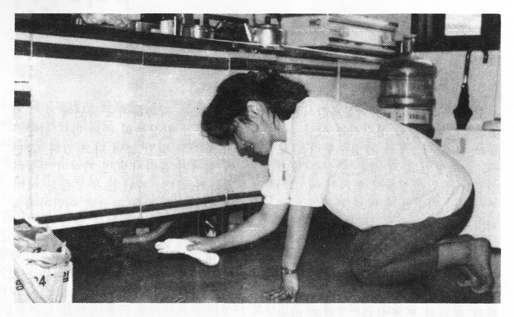
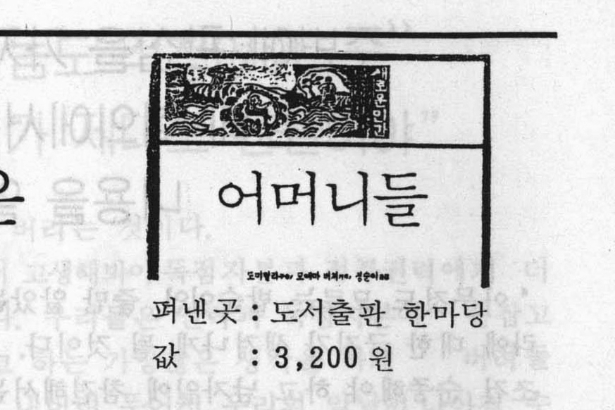
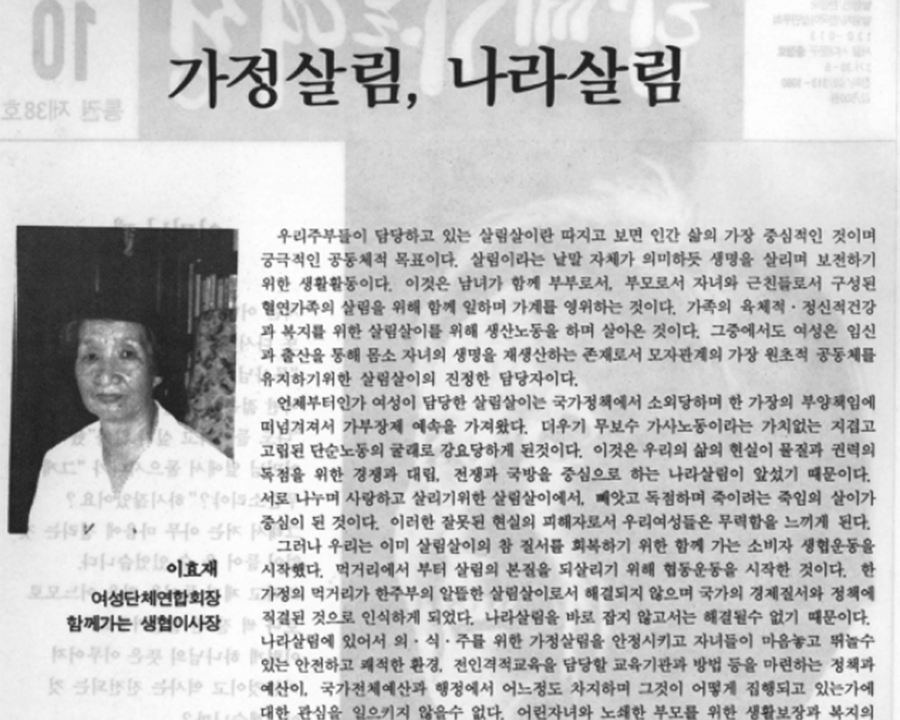

번역
Translation
번역은 그나마 틈새에 있어서, 문필 활동 가운데에서 애매한 지위를 차지하고 있어서, 작가 뒤에 숨어 보이지 않을 수 있어서, 부차적이고 중요하지 않은 일로 간주되어서, 운좋은 일부 여자들이 접근할 수 있는 영역이었다. — 홍한별, 『흰 고래의 흼에 대하여』중 85쪽.
Translation occupied a kind of in-between space: ambiguous in status among literary practices, able to remain hidden behind the author, regarded as secondary and unimportant. And for these very reasons, it was a field that a fortunate few women were able to access. – Hong, Han-byeol On the Whiteness of the White Whale: A Translator’s Essay, p. 85.
조르주 무냉, 부정한 미녀들
George Mounin, Les belle infidéles


